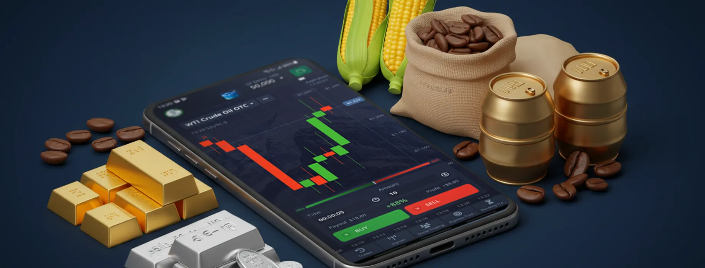

Mercado Amplo e Diversificado
Acesso a uma rede consolidada de compradores e vendedores para garantir as melhores oportunidades para seu negócio.
Na Soft AgroInvest, oferecemos soluções transparentes, ágeis e seguras para você negociar commodities agrícolas com máxima eficiência e lucratividade.
Fale com um Especialista Acesso a uma rede consolidada de compradores e vendedores para garantir as melhores oportunidades para seu negócio.
Negociações claras e seguras, com acompanhamento completo e suporte especializado em todas as etapas.
Processos simplificados para acelerar suas operações, garantindo rapidez sem abrir mão da qualidade.
Equipe técnica pronta para orientar estratégias e maximizar seus resultados no mercado de commodities.